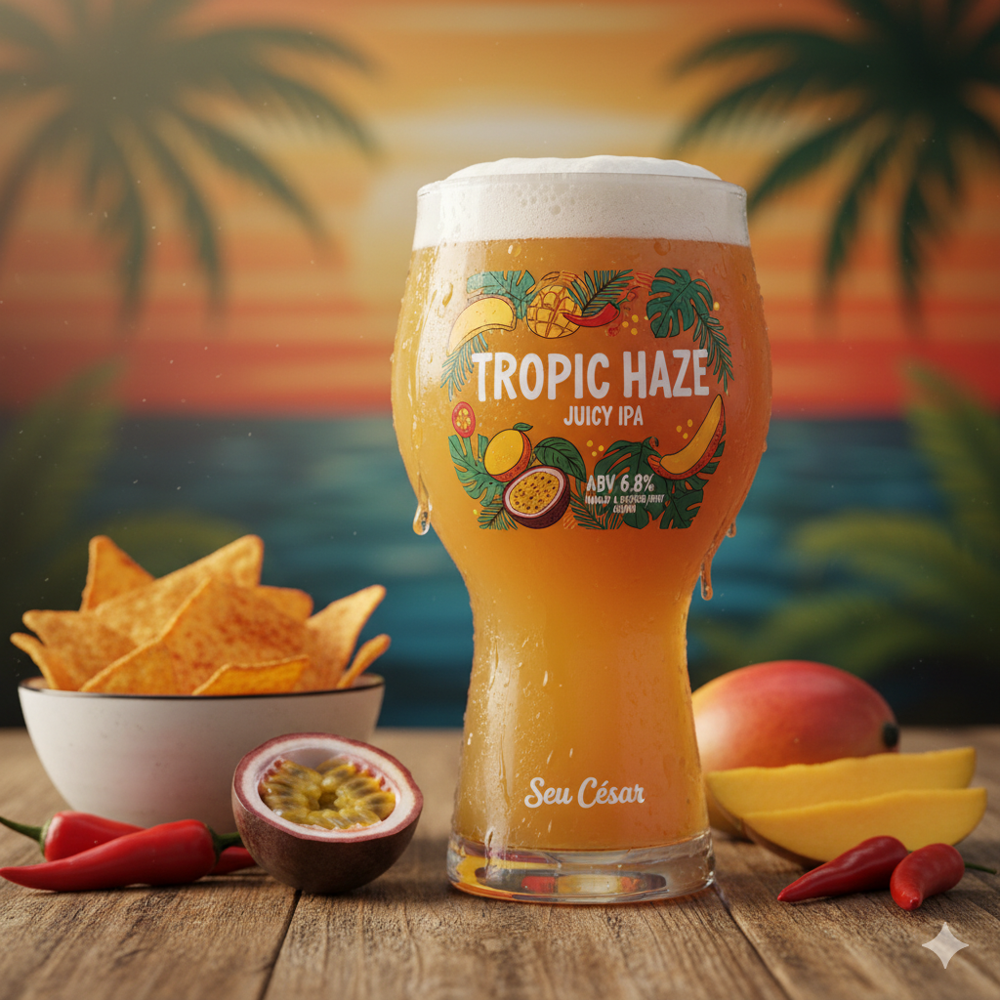
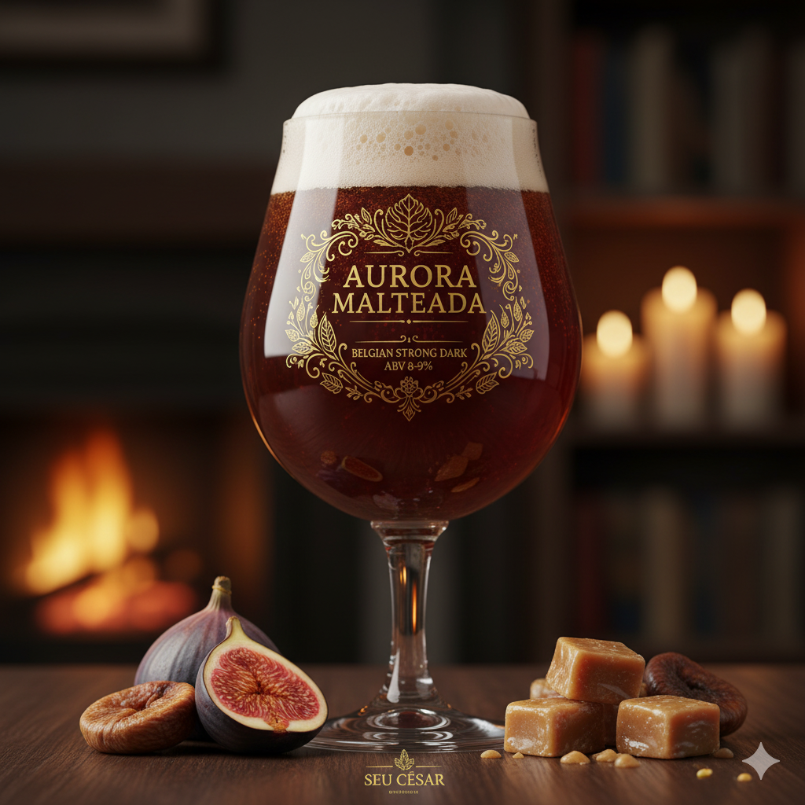
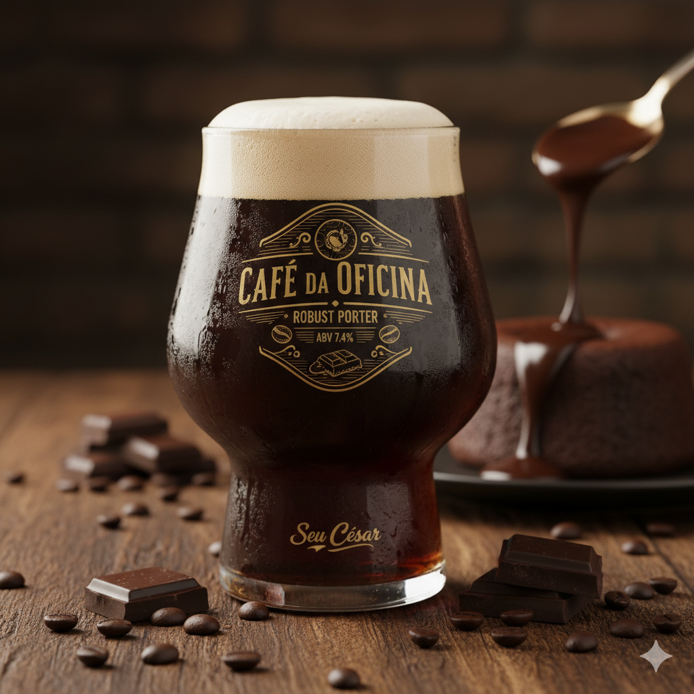
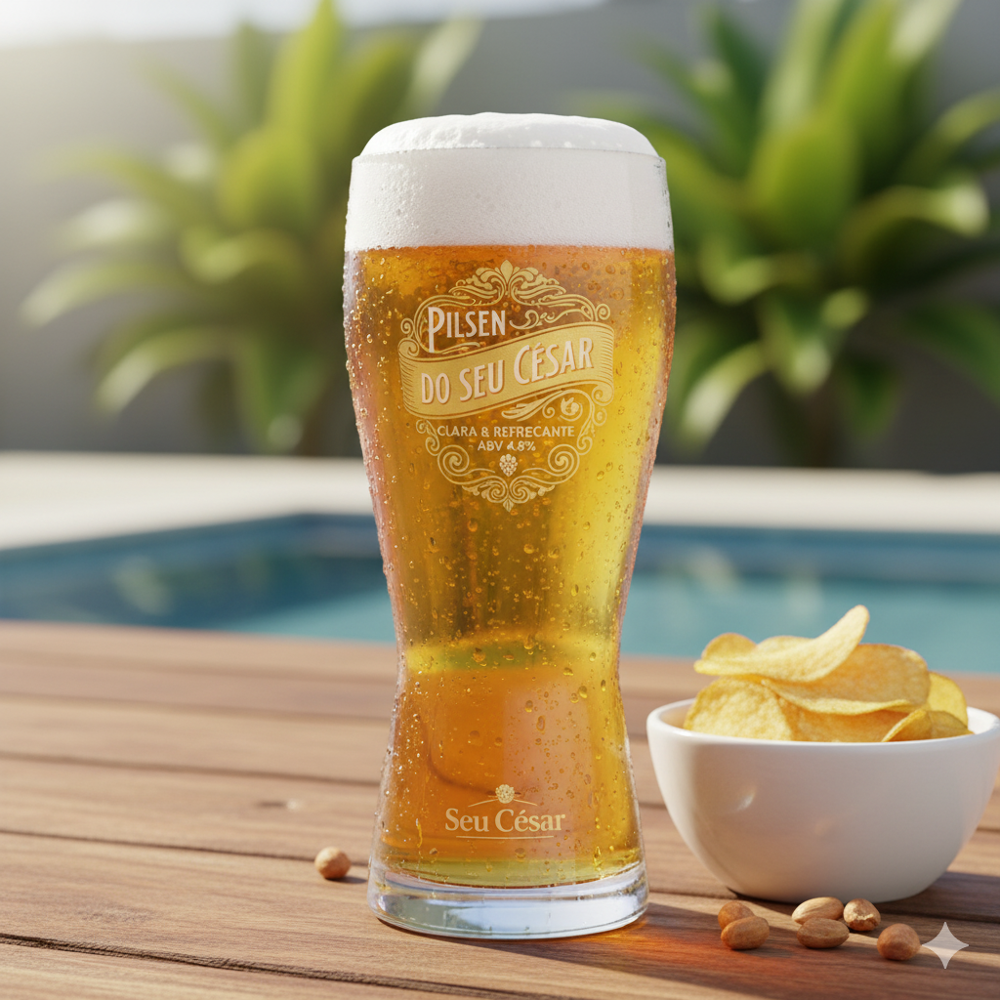

Tropic Haze
IPA suculenta, aroma tropical de manga e maracujá. ABV 6.8% — perfeita para petiscos apimentados.
Saiba mais
Na Cervejaria do Seu César elaboramos cervejas artesanais em lotes pequenos,
com ingredientes selecionados e controle rigoroso de cada etapa de produção.
Unimos técnicas cuidadosas a receitas de família para entregar rótulos
consistentes, cheios de personalidade e identidade local. Venha conhecer nossa
linha fixa e as edições limitadas — aqui qualidade e tradição caminham juntas.

IPA suculenta, aroma tropical de manga e maracujá. ABV 6.8% — perfeita para petiscos apimentados.
Saiba mais
Belgian Strong Dark, maltes caramelizados com notas de figo e toffee. ABV 8.0% — degustação lenta.
Saiba mais
Robust Porter com notas de café e chocolate amargo. ABV 7.4% — ideal para sobremesas.
Saiba mais
Pilsen clara e refrescante, corpo leve, final bem seco e lupulagem sutil. ABV 4.8% — perfeita para acompanhar petiscos e dias quentes.
Saiba mais